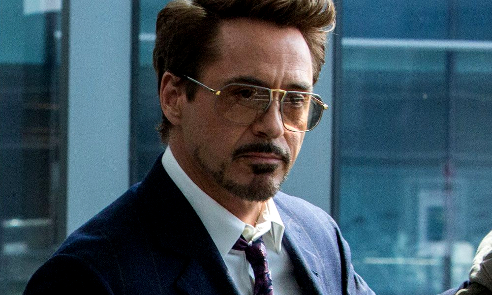

Philanthropist. Tony Stark's confidence is only matched by his high-flying abilities as the hero called Iron Man. While in Afghanistan to demonstrate a new missile for the U.S. military, Stark’s convoy came under fire by a terrorist group known as the Ten Rings and he was severely wounded. Taken prisoner by the group, Stark awoke in their headquarters to learn that shrapnel near his heart had nearly cost him his life, but swift action by scientist and fellow prisoner Ho Yinsen—who had inserted a powerful electromagnet in Stark’s chest—would prolong it temporarily.

Stalling his captors after they demanded he build them a new weapon, Stark replaced the magnet with the RT, a miniature version of a device originally designed by his father, the Arc Reactor. Furthermore, he and Yinsen created a crude suit of armor which could provide them the means with which to escape. The suit worked as planned, though Yinsen sacrificed himself in order to allow Tony enough time to power it up to fight their terrorist captors.
Stark worked overtime in his lab to streamline the armor, and when he’d finished, a new persona emerged: Iron Man. After he discovered Stane had illegally sold Stark weapons to the Ten Rings, he donned the armor to return to Afghanistan and stop the group from using them. Later, he also learned that Stane had paid the Ten Rings to kill him and had been working behind Stark’s back to steal the entire company. The older man then forcibly took the RT from Tony’s chest and left his old friend’s son to die. But, Potts helped Stark insert his original, cobbled-together RT into his chest, and Iron Man flew again..
Designed by Howard Stark, but augmented and strengthened by Tony Stark, the Reactor provides a clean, manageable energy source with incredible output, one that can be adapted to most anything. At first a large piece of equipment, the younger Stark miniaturized the technology into the “RT,” which was the size of a human heart, and put it to great use to power his suits of armor.